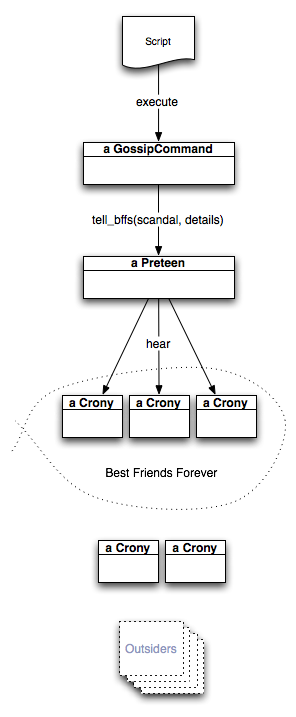

 A gossip script doesn't do much more than configure a GossipCommand subclass and then tell it what to do. See "Using Bundled Scripts" for how configuration works.
Gossip uses preteens as its system metaphor. However, the reader should not assume that the metaphor was inspired by any particular 11-year-old and her social circle. Nor does the use of the variable sophie in the tests mean anything at all. No sirree.
In any case, the GossipCommand's execute sends a Preteen a tell_bff message to have her tell some scandal and its details to her Best Friends Forever (her bffs). These bffs have names like :twitter, :jabber, or :trac. They are instances of the Crony class (more precisely, of a Crony subclass).
Notice that the "best" in "Best Friends Forever" is not to be taken literally. It is quite typical to have more than one bff. Similarly, "forever" is more an an aspiration than a literal fact. The set of bffs can change from one invocation of the script to another (according to changes in configuration files or command-line options).
Cronies who are not currently in the set of bffs do not hear the gossip.
Outside the world of the Preteen and her Cronies, there are—theoretically—other people. However, it is inconceivable that they could ever become a Crony, so they can be ignored. (That means that a person writing a script could provide no --trac option. You might do that if you don't use Trac on your project.)